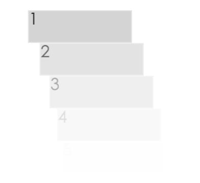

Scss 里面的 for 循环
最近在写一个动画效果，使 ul 下面的 li 逐个进入，就像下图

做这个效果用到了 css 的 animation 中 animation-delay，给 li 设置入场动画后，再给 li 设置 animation-delay，像这样：
1 2 3 | .li-animation-delay-1 { animation-delay: 0.1s; } |
并且每一个 li 的 animation-delay 都比前一个 li 的长 .1s，也就达到了后面的 li 的入场动画后播放的效果。
因为 li 的数量也不确定，所以我打算批量生成一些 li-animation-delay-*, 查了一下 scss 正好有 for 的用法：
1 2 3 4 5 | @for $index from 0 to 10 { .list-ad-#{$index} { animation-delay: $index * 0.1#{s}; } } |
其中，#{***} 的作用的把字符串原封不动的输出。1
#{s} --> s